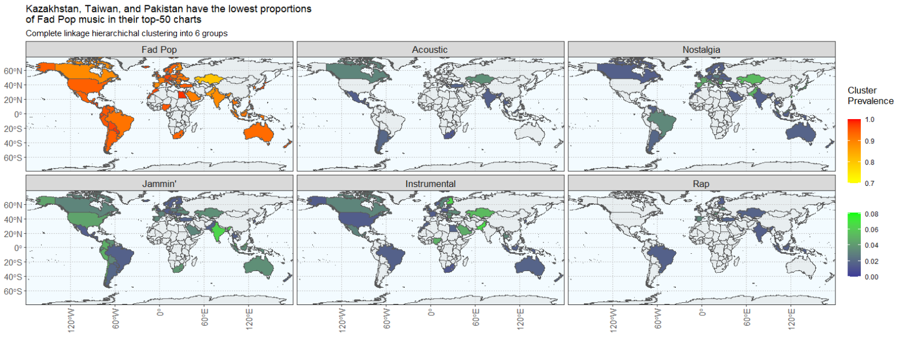

An independent project in the middle of graduate school, the primary objective was an introduction to unsupervised machine learning models. Nonetheless,
I also experimented with my first global maps (static and faceted) and discovered how to implement a
dual color scale - a relatively uncommon technique that extracted more value from data in this scenario.
Introduction
Globalization and the internet have made different countries and cultures more accessible
to each other. Particularly in the digital age and data boom, it’s also getting easier to
analyze what music the masses want to listen to. This poses quite the opportunity for record labels and
musical artists, who want to release hits in this multi-billion-dollar industry.
In such a melting pot with a unified goal,
where does this leave the diversity of music? Can we
see an identifiable set of musical traits that make songs popular overall? Just in certain
countries?
Unsupervised machine learning via clustering and association rules
were used to assess the diversity of global music
on Spotify's "Top 50" hits per country between October 18 and 27, 2023 (inclusive).
2,241 unique songs were summarized into 6 major music categories via hierarchical classification.
In order of prevalence, those categories were:
- Fad Pop (~91.6%): a short-lived category of "fresh meat" - typically released in the past few months.
Aside most consistently adhering to ~3 minutes in duration and trending D, no other
in-scope traits stand out.
- Nostalgia (~2.6%): Released at least a decade ago, these songs are louder with high energy
and positive vibes. Elder songs are less explicit.
- Jammin' (~2.4%): The longest songs, with highest danceability and energy. Surprisingly,
they dominate the "jogger heartbeat" tempo (as opposed to a faster, "intense exercise" one.)
- Instrumental (~2.1%): Instruments are emphasized over vocals and exist almost exclusively
in time signature 4. Interestingly, they tend to be quieter than other categories. Perhaps this has
something to do with rebalancing multiple instruments on recorded formats(?)
- Rap (~0.7%): Has the most words (which are also most likely to be explicit). They
adhere to the middle keys of standard Pitch Class notation, where G and G# are popular and C
is generally avoided. Fans appreciate both recorded and live versions.
Clearly, Spotify's listeners quickly discover new music - but that music's traits are
"middle of the road"; non-polarizing... for mass appeal, perhaps?
Among October's Top-50's, the newest releases are louder, more energetic, explicit, and negative.
While such a description makes our "spider sense" tingle "teenager" - we require Spotify user demographics
to investigate just how much their Top 50 charts are influenced by teens versus other generations.
That said, musicians seeking Spotify popularity should know this:
- If your song hasn't achieved Top-50 in the first few months of release, it likely won't.
- Songs that have been out for longer than a few months can still make it - but these typically have
more distinctive traits.
- Where your distinctive song is released matters; countries have their own preferences.
- Kazakhstan (yellow on the Fad Pop map, below), Greece, and the United
Arab Emirates are great places to introduce new music - as they appreciate
ALL categories on their Top-50 charts. (This can't be said for
the remaining 70 countries studied.)
- Greece, Denmark, Finland, and Ireland are the most diverse within Europe (having 5+
different categories in their Top-50 charts.)
- Review the maps to pair your music with what each country has appreciated.

Some limitations exist:
- This short timeframe in October may not be representative of a bigger picture.
- Contextual references weren't studied but would have significant effect -
like whether the track (or a cover thereof) was featured in a newly released movie or TV show.
- Most of the trait data was derived from Spotify's algorithms; how completely and accurately do these
derivations describe songs?
Reflection
We could extract even more value by going deeper than a high-level music industry trend.
We already have a few general insights for musicians - why not pivot the objective and help
them more specifically? New opportunities to enhance their user experience emerge as we
anticipate their needs and new questions:
- Using data we already have:
- Convert the static faceted maps into a filterable and interactive dashboard that can be zoomed in
- Add a scrollable pop-up hover effect revealing the Top-50 of each country
- What we can do or answer with data we don't yet have:
- If ['my'] song achieves Top-50 status, how can I expect ['my'] other song popularities to be impacted?
- How similar is ['my'] song compared to those on the charts? Which countries would appreciate ['my'] music?
- Be able to play the Top-5 per country (or Top-10; expand the list if there's good reception) right from the dashboard pop-up
- Add album cover images to the pop-up for easier recognizability of the artists
- If a Top-50 song originates in i.e. the US, where and how quickly does it spread?